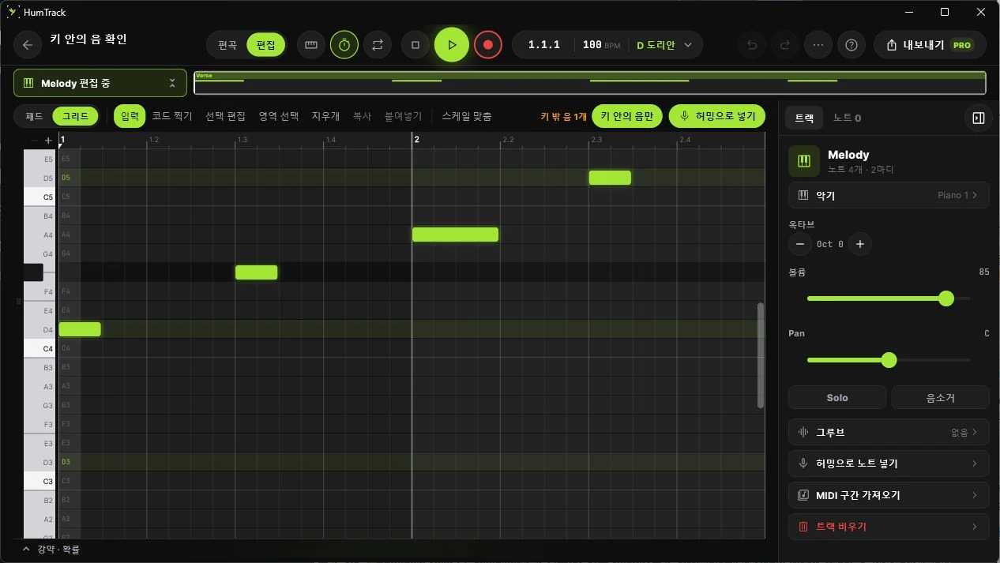

흥얼거려 담고
멜로디를 흥얼거리면 편집할 수 있는 MIDI 노트가 됩니다. 떠오른 순간을 놓치지 마세요.
HUM → MIDI머릿속에 맴도는 멜로디, 그냥 흘려보내지 마세요. 허밍으로 담고, 비트를 더하고, 내 음악으로 만들어 보세요.
악보보다 먼저, 떠오른 아이디어부터. 세 가지 흐름으로 나만의 곡을 만들어 보세요.
멜로디를 흥얼거리면 편집할 수 있는 MIDI 노트가 됩니다. 떠오른 순간을 놓치지 마세요.
HUM → MIDI드럼 패드로 리듬을 쌓고 멜로디와 베이스를 더하세요. 키에 맞는 음으로 더 쉽게 시작할 수 있어요.
DRUMS / MELODY / BASS섹션을 이어 곡을 구성하세요. Pro에서는 WAV·MIDI·스템으로 내보내 다음 작업으로 이어갈 수 있어요.
ARRANGE / EXPORT WITH PRO새롭게 다듬고 있는 데스크톱 작업 공간. 편곡의 흐름부터 작은 음 하나까지, 필요한 곳에 집중할 수 있도록.

곡 전체를 보는 편곡 보기와 음을 다듬는 편집 보기. 재생 제어와 섹션·반복 구간도 한곳에 모았습니다.
트랙 볼륨과 팬, 노트 길이와 강약을 인스펙터에서 조절하세요. 작업 공간에 맞춰 접고 펼칠 수 있습니다.
키 안의 음만 보는 필터와 정돈된 편집 도구 줄. 필요한 음을 찾고 다듬는 흐름을 더 단순하게 만들었습니다.
제작과 편집은 무료로 시작하세요. 더 많은 곡을 저장하고 파일로 내보낼 때 Pro를 선택할 수 있어요.
로그인 없이 바로 시작할 수 있어요.
무료 기능 모두 포함. 구독은 앱에서 관리해요.
구독 가격과 무료 체험 제공 여부는 국가·스토어·계정에 따라 달라질 수 있습니다. 앱의 결제 화면에서 최종 조건을 확인하세요.
네. 드럼 패드와 키에 맞는 멜로디·베이스 음으로 시작할 수 있어요. 허밍을 MIDI 노트로 바꾼 뒤 직접 편집하는 것도 가능합니다.
제작과 편집, 곡 4개까지 저장은 무료입니다. Pro에서는 곡을 무제한 저장하고 WAV·MIDI·스템 파일로 내보낼 수 있어요.
Windows용 Studio는 개발·안정성 검증 중으로 아직 공개 다운로드를 제공하지 않습니다. macOS는 준비 중이며, 공개 일정은 정해지지 않았습니다.
구매한 App Store 또는 Google Play의 구독 관리에서 해지할 수 있습니다. 현재 결제 기간이 끝날 때까지 Pro를 이용할 수 있어요.
지금 떠오른 아이디어로 시작해 보세요.